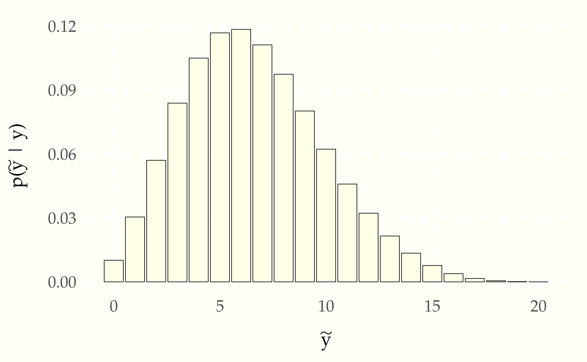
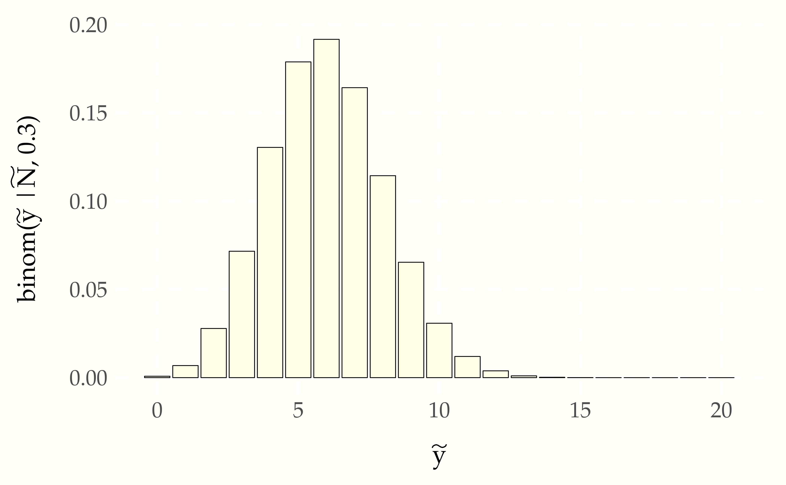
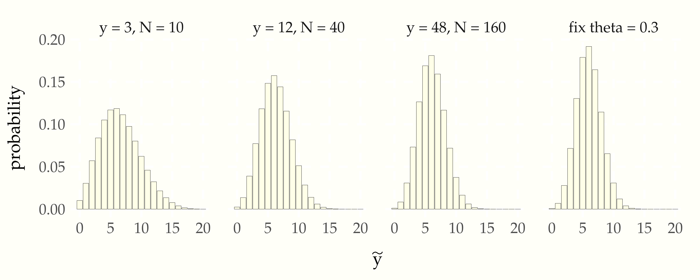

One of the primary reasons we fit models is to make predictions about the future. More specifically, we want to observe some data \(y\) and use it to predict future data \(\tilde{y}\). Even more specifically, we’d like to understand the probability distribution of the future data \(\tilde{y}\) given the observed data \(y\).
We are going to assume that we are still working relative to a model whose sampling distribution has a density \(p(y \mid \theta)\).145 From now on, we’ll be dropping random variable subscripts on probabilty functions. The convention in applied statistics is to choose names for bound variables that allow the random variables to be determined by context. For example, we will write \(p(\theta \mid y)\) for a posterior, taking it to mean \(p_{\Theta \mid Y}(\theta \mid y)\). Thus if we knew the value of \(\theta\),146 We are also overloading lowercase variables like \(\theta\) to mean their random variable counterpart \(\Theta\) when necessary, as it is here, where we should properly be saying that the random variable \(\Theta\) takes on some known value \(\theta\). the distribution of \(\tilde{y}\) would be given by \(p(\tilde{y} \mid \theta)\). Here, we are assuming that the sampling distribution will be the same density for the original data \(p(y \mid \theta)\) and the predictive data \(p(\tilde{y} \mid \theta)\).
Unfortunately, we don’t know the true value of \(\theta\). All we have to go on are the inferences we can make about \(\theta\) given our model and observed data \(y\). As we saw in the last chapter, this knowledge is encapsulated in a posterior distribution with density \(p(\theta \mid y)\). So rather than making predictions \(p(\tilde{y} \mid \theta)\) based on a single estimated value of \(\theta\), we are going to create a weighted average of predictions for every possible \(\theta\) with weights determined by the posterior \(p(\theta \mid y)\). Because \(\theta\) is continuous, the averaging must proceed by integration. The result is the posterior predictive distribution, the density for which is defined by
\[ p(\tilde{y} \mid y) \ = \ \displaystyle \int_{\Theta} p(\tilde{y} \mid \theta) \times p(\theta \mid y) \, \mathrm{d}\theta. \]
The variable \(\Theta\) is now doing extra duty as the set of possible values for \(\theta\), that is the range of variables over which \(\theta\) is averaged.
When estimating the probability of new data, there are two forms of uncertainty that need to be taken into account. The first is estimation uncertainty arising from not knowing the exact value of \(\theta\). This comes into play by averaging over the posterior \(p(\theta \mid y)\). The second form of uncertainty is introduced by the sampling distribution \(p(\tilde{y} \mid \theta)\). Even if we knew the precise value of \(\theta\), we would still not know the value of \(\tilde{y}\) because it is not a deterministic function of \(\theta\). Let’s write our formula again highlighting the two sources of uncertainty.
\[ p(\tilde{y} \mid y) \ = \ \int_{\Theta} \underbrace{p(\tilde{y} \mid \theta)}_{\mbox{sampling uncertainty}} \times \underbrace{p(\theta \mid y)}_{\mbox{estimation uncertainty}} \, \mathrm{d}\theta. \]
The probability mass function for the posterior predictive is defined by an integral that averages over the posterior, thus it can be estimated using simulations \(\theta^{(1)}, \theta^{(M)}\) of the posterior \(p(\theta \mid y)\) as
\[ p(\tilde{y} \mid y) \ \approx \ \frac{1}{M} \sum_{m=1}^M p(\tilde{y} \mid \theta^{(m)}). \]
That is, we just take the average prediction over our sample of simulations.
Continuing our example from the previous chapter, we will put everything together and show how to compute posterior predictive densities. To review, we have \(y\) boys born out of \(N\) births, under the sampling distribution \(y \sim \mbox{binomial}(N, \theta)\) and prior \(\theta \sim \mbox{uniform}(0, 1)\). We have shown in the previous chapter how to take simulated draws \(\theta^{(1)}, \ldots, \theta^{(M)}\) from the posterior distribution with density \(p(\theta \mid y, N)\).
Now suppose we have new data \(\tilde{y}\) from a trial of size \(\tilde{N}\). We can estimate \(p(\tilde{y} \mid y, \tilde{N})\) by instantiating the general formula above,
\[ p(\tilde{y} \mid y, \tilde{N}) \ \approx \ \frac{1}{M} \sum_{m = 1}^M \mbox{binomial}(\tilde{y} \mid \tilde{N}, \theta^{(m)}). \]
If we treat \(\mbox{binomial}\) as evaluating elementwise,147 A function \(f : \mathbb{R} \rightarrow \mathbb{R}\) can be extended elementwise to a function on sequences \(f : \mathbb{R}^N \rightarrow \mathbb{R}^N\) by defining \[f(x)[n] = f(x[n]).\] For example, elementwise exponentiation satisfies \[\exp((u, v, w)) = (\exp(a), \exp(v), \exp(w)).\] so that a collection of \(\theta\) as input produces a collection as output, then we can write this using the elementwise definition of the binomial and a function to calculation the mean of a collection as
\[ \begin{array}{rcl} p\!\left(\tilde{y} \mid y\right) & \approx & \mbox{mean}\!\left(\mbox{binomial}\!\left(\tilde{y} \mid \tilde{N}, \theta\right)\right). \\[6pt] & \approx & \mbox{mean}\!\left(\mbox{binomial}\!\left(\tilde{y} \mid \tilde{N}, \left(\theta^{(1)}, \ldots \theta^{(M)}\right)\right)\right). \\[6pt] & = & \mbox{mean}\!\left( ( \mbox{binomial}\!\left(\tilde{y} \mid \tilde{N}, \theta^{(1)}\right), \ldots, \mbox{binomial}\!\left(\tilde{y} \mid \tilde{N}, \theta^{(M)}\right) \right) \\[6pt] & = & \frac{1}{M} \sum_{m=1}^M \mbox{binomial}\!\left(\tilde{y} \mid \tilde{N}, \theta^{(m)}\right). \end{array} \]
The second two lines illustrate how an elementwise definition is expanded, and the third shows how the compound function for the mean is applied.148 The definition of the mean function is \[\mbox{mean}\!\left( (u_1, \ldots, u_N) \right) \ = \ \frac{1}{N} \sum_{n=1}^N u_n.\]
The pseudocode translates the mathematical definition directly.
for (m in 1:M)
draw theta(m) from posterior p(theta | y, N)
p[m] = binomial(y_pred | N_pred, theta(m))
print 'esimated p(y_pred | y) = ' mean(p)With an elementwise version of the binomial probability mass function, this simplifies to the following.149 Simple can mean several things—we’re measuring code simplicity, not necessarily how simple it is to undersetand. Code simplicity involves several things, among them shallower nesting of statments and fewer indexed expressions, as in this example. As another example, the calculation of the mean could be done manually, but it is simpler to use a library function. Even if there’s no library function, it simplifies code to break complex operations down into well-named functions. Building up a personal library of such functions is the first step toward becoming a developer.
for (m in 1:M)
draw theta(m) from posterior p(theta | y, N)
p = binomial(y_pred | N_pred, theta)
print 'esimated p(y_pred | y) = ' mean(p)Let’s continue with the small data example, where \(y = 3\) and \(N = 10\). We’ll take \(\tilde{N} = 20\) in order to make a prediction over the next twenty observations and calculate the probability for each possible \(\tilde{y} \in 0:\tilde{N}\). Then we’ll plot them in a bar chart to inspect the distribution.
Figure 9.1: Probablity mass function for the posterior predictive distribution of the number of boys \(\tilde{y}\) in a subsequent group of \(\tilde{N} = 20\) births based on observing 3 boys in 10 births with no prior information. Although it is peaked near the 30% level observed in the data, it would not be that surprising to see more boys than girls in the next 20 births.
Because we have only observed \(N\) outcomes, the posterior is not very concentrated—it is consistent with a wide range of possible outcomes. Contrast this situation to using the binomial directly to do prediction by setting \(\theta = 0.3\), the observed proportion of boys.150 Inference with a single point estimate of one or more parameters is common in live, real-time applications, where the cost of averaging over the posterior may be prohibitive.
Figure 9.2: Probability mass function for predictions made by plugging the proportion of boy births observed in the data, \(\theta^* = \frac{y}{N} = 0.3\), into the sampling distribution, to yield \(\mbox{binomial}(\tilde{y} \mid \tilde{N}, \theta^*)\). Compared to the full posterior taking into account estimation uncertinaty in \(\theta\), this plug-in estimate makes it seem very unlikely there will be more boys than girls born in the next 20 births.
The probability mass in the predictions is much more concentrated around the observed proportion of boys. Ignoring the estimation uncertainty in \(\theta\) captured by the full posterior leads to inferences that are overly concentrated compared to the full probabilistic conditioning on observed data. As we will see in subsequent chapters, such predictions are not well calibrated for future data assuming the model is correct—they place too much certainty in the observed proportion of boys in a small sample.
The full posterior automatically adjusts for the size of the sample. Consider the following plot, in which the same proportion of boys is provided (30%), but the sample size continues to grow (quadrupling each time).
Figure 9.3: Illustration of convergence of posterior to binomial prediction based on proportion of boys as number of observations \(y\) and \(N\) grows, with proportion \(\frac{y}{N}\) fixed. The central limit theorem tells us that each quadrupling of the data cuts the uncertainty in parameter estimation in half until all that is left is the sampling uncertainty in the binomial, as represented in the final plot, where \(\theta = 0.3\) is fixed.
As the data size grows, the posterior predictive distribution approaches the predictions derived from just plugging the proportion of boys observed (30%) in the sampling distribution. After 160 observations, the posterior predictive distribution is only a percent or two away from the predictions that do not take into account estimation uncertainty. Whether that matters or not will depend on the application.151 If leveraged bets or lives are at stake, a 1% discrepancey in predictions can have enormous consequences.
We often run into the problem of underflow when computing densities or probabilities.152 Underflow is the result of operations which produce real numbers \(\epsilon\) smaller than the smallest number that can be represented. To get around that problem we compute on the log scale, using \(\log p(y \mid \theta)\) rather than doing calculations on the original scale \(p(y \mid \theta)\).
But we have to be careful with averaging non-linear operations. The averaging that we do with simulation-based estimates does not distribute. For most \(u\) and \(v\),153 An exception is \(u = v = 2.\)
\[ \log u + \log v \neq \log (u + v). \]
As a result, the log of an average is not equal to the average of a log,
\[ \frac{1}{M} \sum_{m=1}^M \log u_m \neq \log \left( \frac{1}{M} \sum_{m = 1}^M u_m \right). \]
All is not lost, however. We will rewrite our desired result as
\[ \begin{array}{rcl} \log \frac{1}{M} \sum_{m = 1}^M p(\tilde{y} \mid \theta^{(m)}) & = & \log \frac{1}{M} + \log \sum_{m = 1}^M p(\tilde{y} \mid \theta^{(m)}) \\[4pt] & = & - \log M + \log \sum_{m=1}^M \exp \left( \log p(\tilde{y} \mid \theta^{(m)}) \right) \\[4pt] & = & \mbox{log_sum_exp}(\log p(\tilde{y} \mid \theta)) - \log M. \end{array} \]
Extending our example, we can work on the log scale to stablize calculations with larger \(N\) by calculating
\[ \begin{array}{rcl} \log p(\tilde{y} \mid y) & \approx & \log \sum_{m=1}^M \exp\left( \log \mbox{binomial}(\tilde{y} \mid \tilde{N}, \theta^{(m)}) \right). \\[8pt] & = & \mbox{log_sum_exp}(\log \mbox{binomial}(\tilde{y} \mid \tilde{N}, \theta)). \end{array} \]
As with the algorithm on the original scale, the pseudocode is straightforward given a means to draw \(\theta^{(m)}\) from the posterior \(p(\theta \mid y, N)\).154 Typically, software will have the binomial implemented on the log scale directly, so it won’t be necessary to take the log of the standard scale version.
for (m in 1:M)
draw theta(m) from posterior p(theta | y, N)
lp[m] = log(binomial(y_pred | N_pred, theta(m))
print 'log p(y_pred | y) = ' log_sum_exp(lp)Thus we can calculate posterior predictive densities on the log scale using log scale density calculations throughout to prevent overflow and underflow in intermediate calculations or in the final result.
Working with expectations and conditional expectations is natural for posterior inference, but initially requires some mental gymnastics to interpret all the implicit bindings. Using expectation notation, the posterior predictive distribution can be defined as
\[ p(\tilde{y} \mid y) \ = \ \displaystyle \mathbb{E}\!\left[ p(\tilde{y} \mid \theta) \mid y \right]. \]
We are now overloading lower case variables to do double duty as their upper-case counterparts. Rendered with full random variable indexing, the expectation and its definition are
\[ \begin{array}{rcl} p_{\tilde{Y} \mid Y}(\tilde{y} \mid y) & = & \displaystyle \mathbb{E}\!\left[ p_{\tilde{Y}\mid\Theta}(\tilde{y} \mid \Theta) \mid Y = y \right] \\[8pt] & = & \displaystyle \int_T p_{\tilde{Y}\mid\Theta}(\tilde{y} \mid \theta) \times p_{\Theta \mid Y}(\theta \mid y) \, \mathrm{d} \theta, \end{array} \]
where \(T\) is domain of integration for \(\theta\), i.e., possible values for \(\Theta\). The twist is that the function whose expectation is being taken is now a density \(p(\tilde{y} \mid \theta)\) in which \(\theta\) shows up as a conditioning variable for the data \(\tilde{y}\) being predicted.
The trick to understanding expectations is in understanding which variables are bound—all other random variables are averaged out to define the expectation. The value of both the observed data \(y\) and the data \(\tilde{y}\) for which we are computing predictions are fixed by the function definition and are not free variables in the expectation. The random variable \(\theta\) is not bound anywhere, and hence it is averaged in the calculation.